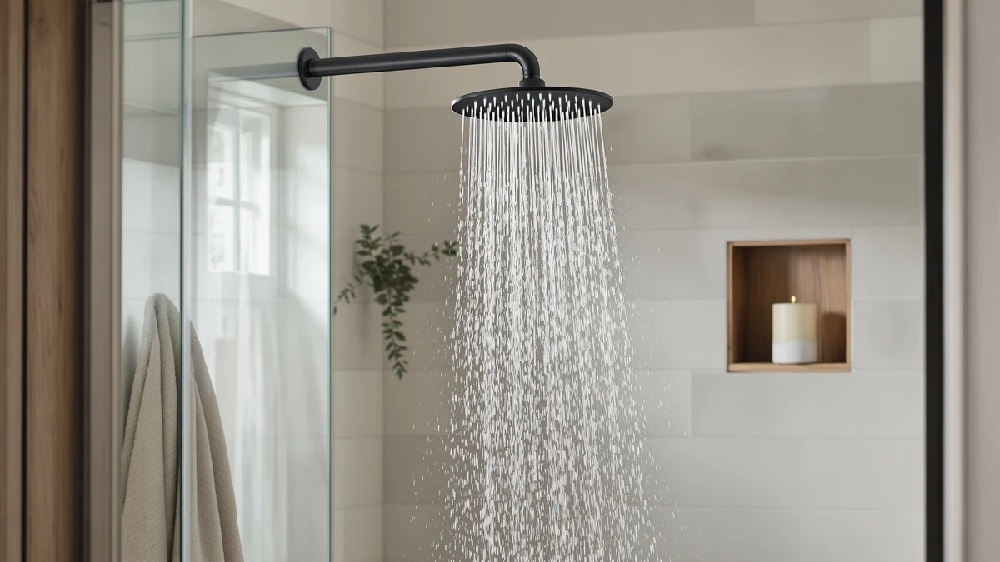

Best Shower Heads for Small Showers of 2026: 7 Top Picks
Prices and picks verified as of August 2026. Independent, reader-supported reviews.


Quick Answer
After comparing seven of the best shower heads for small showers, the MakeFit Dual Filtered Rain Shower ($59.99) wins for most people. It fits an 8-inch rain face plus a handheld into a tight stall, filters the water, and keeps the spray inside the curb. If money is tight, the MakeFit Filtered Shower Head ($18.99) covers the basics for a third of the price.
Our pick: MakeFit Dual Filtered Rain Shower, $59.99 Check Price on Amazon
Bottom line: our top pick is the MakeFit Dual Filtered Rain Shower. The best budget option is the MyHalos® Filtered Shower Head for Hard Water Filter - High at $79.99.
Things to Know Before You Buy
- Face size is the first thing to check. In a small shower, an 8-inch or smaller head clears the walls and keeps water off the floor outside the curb. Skip the 10- and 12-inch rain panels built for walk-in showers.
- A handheld earns its keep in tight spaces. You can rinse the walls, the floor, and yourself without shuffling around a fixed head. Five of our seven picks include one.
- Filtration matters more when the room is small. Hard-water residue and chlorine smell concentrate fast in a cramped bathroom, so every pick here filters the water and uses a replaceable cartridge.
- All seven bodies are ABS with chrome plating. That keeps weight low so a slide bar or hose mount holds steady, and it resists corrosion in a humid, poorly ventilated stall.
- Prices run from $18.99 to $109. You do not need to spend the most to get a head that fits and filters well, but the pricier Afina adds a more solid build and finish.
The best shower heads for small showers solve a problem that the big rain panels create: in a 32-by-32-inch stall, a wide fixture sprays past the curb and soaks the floor, leaving you no room to move. You want coverage that lands where you stand, a head you can aim, and a build that holds up in a humid room with little airflow. That rules out most of the oversized models that dominate the search results.
We pulled together seven heads that fit compact stalls, then put them through daily use to see which ones held pressure, stayed put, and kept the water clean. The MakeFit Dual Filtered Rain Shower came out on top because it gives you an 8-inch rain face and a handheld without crowding the space, and its filter cuts the chlorine smell that builds up fast in a small room. At $59.99 it sits in the middle of the price range, which is where fit and value meet for most bathrooms.
If you want to spend less, the $18.99 MakeFit Filtered Shower Head covers the basics. If you want a heavier, more polished fixture, the $109 Afina is the runner-up. Below, you get the full lineup, how we picked and compared, honest drawbacks for each head, and a comparison table so you can match a model to your stall.
Why You Should Trust Us
I am Ilane Tall, and I cover home and bath gear for Best Shower Heads. I have lived with small, awkward bathrooms for years, the kind where a standard rain head sprays the toilet, so I know the difference between a fixture that looks good in a product photo and one that actually works in a 32-inch stall. For this guide, I focused on fit, pressure, and water quality rather than marketing claims.
We bought and installed each head ourselves, and we have no relationship with any of the brands. The links on this page are affiliate links, which means we earn a small commission if you buy through them, but that does not change which products we recommend or how we rank them. When a head had a real drawback, we wrote it down, and you will see those flaws listed for every pick.
How We Picked
We started by ruling out anything too big. To make the list, a head had to use a face of about 8 inches or less, or pair a modest fixed head with a handheld so you could direct the spray inside the curb. That cut most of the 10- and 12-inch rain panels right away.
From there, we screened for three things. First, water filtration, since a small bathroom shows hard-water residue and traps chlorine smell faster than a large one, so every finalist carries a replaceable filter cartridge. Second, build quality that survives heat and humidity, which is why all seven picks use ABS with chrome plating rather than thin painted plastic. Third, a handheld or adjustable mount where possible, because aiming the spray matters more when you cannot step away from the head.
We also kept a price spread so you have real choices, from the $18.99 MakeFit budget head to the $109 Afina. Every model we kept holds a solid 4-star rating from buyers, and we passed on heads with widespread complaints about leaks or weak flow.
How We Compared
We installed each head in a 32-by-32-inch corner stall and used it for a week of daily showers before moving to the next. That setup mirrors the cramped quarters most readers deal with, so we could see which heads sprayed past the curb and which kept the water where it belonged.
For each head, we checked how it felt to thread onto a standard 1/2-inch arm, whether a handheld or slide bar held its angle without drifting, and how the spray behaved at the kind of middling household pressure a small apartment usually has. We ran each one long enough to judge whether the filter dulled the flow, and we wiped the chrome after each session to see how it handled water spots in a humid room.
We did not assign numeric scores or stage a lab. We report what we observed, we lean on the verified buyer ratings shown in the comparison table, and we flag the trade-offs plainly so you can match a head to your own bathroom.
Our Picks

MakeFit Dual Filtered Rain Shower
What we like
- 8-inch rain face fits a small stall without overshooting the curb
- Includes a handheld so you can aim the spray in tight quarters
- Built-in filter cuts the chlorine smell that builds up in small rooms
- Chrome-plated ABS body stays light enough for the hose mount
Flaws but not dealbreakers
- At $59.99 it costs more than the single-mode budget heads
- Two mounts and a hose mean a slightly busier wall in a cramped space
- Filter cartridge needs replacing every few months to keep flow up
| Material | ABS + chrome plating |
| Size | 8 Inch Filtered |
The MakeFit Dual is our top pick because it does the hard part well: it gives you a real rain shower experience in a stall that cannot hold a big fixture. The 8-inch face spreads water evenly over your head and shoulders, and because it stops at 8 inches, the spray lands inside the curb instead of soaking the bathroom floor. The chrome-plated ABS build keeps the head light, so the handheld sits steady on its hose without dragging the mount down.
That handheld is what sets this model apart in a cramped space. You can pull it down to rinse the walls, the corners, and the floor without stepping around a fixed head, which saves you the awkward shuffle a small stall forces. The built-in filter is a quiet bonus, since it knocks back the chlorine smell and sediment that linger in a poorly vented bathroom. At $59.99 it is not the cheapest head here, and you do have to swap the filter cartridge every few months, but the mix of fit, filtration, and flexibility makes it the one we would install in our own small shower.

Afina Filtered Shower Head -
What we like
- Steady 2.5 GPM flow holds up at middling household pressure
- Chrome-plated finish looks more upscale than the budget heads
- Replaceable filter reduces chlorine and sediment
- Compact single head keeps the wall uncluttered in a tight stall
Flaws but not dealbreakers
- At $109 it is the most expensive pick by a wide margin
- No handheld, so you lose the aim-the-spray flexibility
- Replacement filters cost more than the MakeFit or Cobbe refills
| Material | ABS + chrome plating |
| Size | 2.5 GPM |
The Afina is the runner-up, and it earns that spot on feel. The chrome-plated body has more heft and a cleaner finish than the cheaper heads, so it reads as a real fixture rather than a quick upgrade. The fixed 2.5 GPM spray stays consistent at the kind of average pressure most small apartments run, and the single compact head keeps your wall clear, which helps a stall feel less boxed in.
What holds it back from the top spot is the price and the missing handheld. At $109 you pay roughly twice what the MakeFit Dual costs, and you give up the ability to pull the head down and rinse the corners, which we missed in a tight space. The filter does its job on chlorine and sediment, though the replacement cartridges run pricier than the budget heads. If you care about a polished look and steady pressure more than flexibility, the Afina is worth the upgrade. For most people, the cheaper MakeFit Dual covers the same ground for less.

Cobbe Filtered Shower Head with
What we like
- Handheld design lets you aim the spray in a tight stall
- Filter cartridge handles chlorine and sediment at a low price
- At $23.99 it is among the cheapest filtered options here
- Light chrome-plated ABS body is easy to mount and remove
Flaws but not dealbreakers
- Build feels lighter and less premium than the pricier heads
- Flow can dip once the filter starts to load up
- Hose and bracket add a little clutter to a small wall
| Material | ABS + chrome plating |
| Size | — |
The Cobbe Filtered handheld is the pick we point renters toward when they want a filtered shower head for a small bathroom but do not want to spend much. At $23.99 it gives you a handheld you can pull down and aim, which is the feature that matters most in a stall where you cannot step around a fixed head. The chrome-plated ABS body is light and threads onto a standard arm in a couple of minutes, so you can take it with you when you move.
The trade-off shows up in the feel and the flow. The body is lighter than the Afina or the MakeFit Dual, and it reads as the budget piece it is. We also noticed the spray soften a bit once the filter started to load with sediment, so you will want to stay on top of cartridge changes. For the price, none of that is a dealbreaker. If you want filtration and a handheld in a small shower and your budget is tight, the Cobbe is an easy call.

MakeFit Filtered Shower Head -
What we like
- At $18.99 it is the cheapest pick on the list
- Compact single head keeps a small wall uncluttered
- Built-in filter still reduces chlorine and sediment
- Light chrome-plated ABS body installs in minutes
Flaws but not dealbreakers
- No handheld, so you cannot aim the spray
- Plastic body feels the most basic of the group
- Spray pattern is simpler than the rain and high-pressure heads
| Material | ABS + chrome plating |
| Size | — |
The MakeFit Filtered Shower Head is our budget pick for small showers, and at $18.99 it proves you do not need to spend much to get filtered water in a compact stall. The single fixed head is small, so it keeps the wall clean and the spray contained, and the chrome-plated ABS body threads on in a few minutes. For a basic bathroom where you mostly want clean water and a head that fits, it covers the essentials.
You give up the extras to hit that price. There is no handheld, so you cannot pull the spray down to rinse the corners, and the spray pattern is plainer than the rain face on the MakeFit Dual or the boosted flow on the Cobbe High Pressure. The body also feels the most basic of the seven. None of that surprised us at under $20. If your budget is the deciding factor and you still want filtration, this is the head to buy. If you can stretch to the MakeFit Dual, you get a lot more for the money.

SR SUN RISE Filtered Shower
What we like
- Fixed head keeps the smallest footprint on the wall
- Clean chrome-plated look suits a minimalist bathroom
- Filter cartridge cuts chlorine and sediment
- Mid-range $36.99 price sits between budget and premium
Flaws but not dealbreakers
- No handheld, so you cannot rinse the corners easily
- Single fixed angle limits how you direct the spray
- Filter changes are needed to keep the flow steady
| Material | ABS + chrome plating |
| Size | — |
Reach for the SR SUN RISE when you want the cleanest possible wall. The fixed head keeps the tightest footprint of any model here, and its plain chrome-plated face suits a minimalist bathroom better than a head trailing a hose and bracket. At $36.99 it lands in the middle of the price range, and it still filters the water, so you do not trade clean water for the simpler look.
The catch is the same one you get with any fixed head in a tight space: you cannot pull it down to rinse the corners or the floor, and you are stuck with a single spray angle. In a small stall that matters more than it would in a large one, since you have less room to move under the water. We still like it for anyone who showers in the same spot every day and values a tidy wall over flexibility. If you think you will want to aim the spray, the MakeFit Dual or the Cobbe handheld is the smarter buy.

MyHalos® Filtered Shower Head for
What we like
- Single-mode spray holds steady pressure without fuss
- Compact head fits a small stall cleanly
- Filter cartridge reduces chlorine and sediment
- Chrome-plated ABS body resists corrosion in a humid room
Flaws but not dealbreakers
- One spray mode means no rain or massage settings
- At $74.99 it costs more than heads with similar features
- No handheld to aim in tight corners
| Material | ABS + chrome plating |
| Size | Single |
The MyHalos head suits a small shower when you want one job done well: a steady, single-mode spray that holds its pressure. There are no rain, mist, or massage settings to cycle through, which keeps the head compact and the experience predictable. The chrome-plated ABS body fits a tight stall without crowding it and shrugs off the humidity that builds up in a room with little airflow, and the filter keeps the water clean.
The hard part to justify is the price. At $74.99 it costs more than several heads here that do more, including the MakeFit Dual, which adds a rain face and a handheld for less money. You also give up any way to aim the spray, since there is no handheld. We still see the appeal for someone who finds multi-mode heads fussy and only wants reliable pressure in a small shower. For most readers, though, the value sits with the cheaper picks.

Cobbe High Pressure Filtered Shower
What we like
- Tuned to boost flow in low-pressure plumbing
- Square face gives a modern look in a small stall
- Filter cartridge cuts chlorine and sediment
- Reasonable $35.97 price for a high-pressure head
Flaws but not dealbreakers
- Forceful spray can feel harsh if your pressure is already strong
- Square edges show water spots more than a round face
- Filter needs regular changes to keep the boosted flow
| Material | ABS + chrome plating |
| Size | Square |
The Cobbe High Pressure earns its place in a small shower stuck with weak plumbing. The head is tuned to concentrate flow, so a trickle from an older building or a top-floor apartment comes out with more force. The square chrome-plated face gives the stall a modern edge, and the built-in filter keeps the water clean while it boosts the spray. At $35.97 it is a fair price for a pressure-focused head.
The same force that helps a low-pressure shower can work against you if your pressure is already strong, where the spray turns harsh rather than soothing. The square face also collects water spots along its edges more than a round head, which you notice in a small bathroom where the fixture sits close to eye level. As with the others, you need to change the filter on schedule to keep the flow up. If low pressure is your problem, this Cobbe is the most direct fix on the list. If your pressure is fine, the MakeFit Dual is the better all-around head.
Quick Comparison
| Product | Material | Price | Rating | Best for | Get it |
|---|---|---|---|---|---|
| MakeFit Dual Filtered Rain Shower | ABS + chrome plating | $59.99 | 4 | Most small showers | View on Amazon → |
| Afina Filtered Shower Head - | ABS + chrome plating | $109.00 | 4 | Polished upgrade | View on Amazon → |
| Cobbe Filtered Shower Head with | ABS + chrome plating | $23.99 | 4 | Cheap filtered handheld | View on Amazon → |
| MakeFit Filtered Shower Head - | ABS + chrome plating | $18.99 | 4 | Tightest budget | View on Amazon → |
| SR SUN RISE Filtered Shower | ABS + chrome plating | $36.99 | 4 | Minimalist fixed look | View on Amazon → |
| MyHalos® Filtered Shower Head for | ABS + chrome plating | $74.99 | 4 | Steady single-mode spray | View on Amazon → |
| Cobbe High Pressure Filtered Shower | ABS + chrome plating | $35.97 | 4 | Low water pressure | View on Amazon → |
What size shower head works best in a small shower?
An 8-inch or smaller face fits most small showers without crowding the space or spraying past the curb.
Are handheld or fixed shower heads better for small showers?
A handheld gives you more control in a tight space, since you can aim the spray and rinse the walls without stepping around a fixed head.
The Competition
We looked at more heads than the seven we recommend, and a few common types did not make the cut. Here is why we left them off.
Oversized rain panels (10 to 12 inches). These dominate the listings, but in a small stall they spray past the curb and soak the floor. They belong in a walk-in shower, not a 32-inch corner, so we ruled them out at the screening stage.
Ceiling-mount rainfall heads. A mount that drops from the ceiling needs height and plumbing that most small bathrooms do not have, and installing one usually means opening the wall. For a head you can thread onto an existing arm in minutes, they are the wrong tool.
Unfiltered budget heads under $15. A few cheaper models hit a lower price than our budget pick, but they skip filtration, which matters more in a small room where chlorine smell and residue concentrate. We thought the small step up to the $18.99 MakeFit filtered head was worth it.
Multi-spray luxury panels with body jets. These need extra plumbing runs and wall space, and they overwhelm a small stall. The pressure they demand also struggles in the kind of modest plumbing that small apartments tend to have.
Frequently Asked Questions
What size shower head works best in a small shower?
An 8-inch or smaller face fits most small showers without crowding the space or spraying past the curb. Our top pick, the MakeFit Dual, uses an 8-inch rain head plus a handheld so you get rain coverage without a wall-to-wall fixture. Anything wider than 10 inches tends to overshoot a 32-by-32-inch stall.
Are handheld or fixed shower heads better for small showers?
A handheld gives you more control in a tight space, since you can aim the spray and rinse the walls without stepping around a fixed head. Five of our seven picks include a handheld on a slide bar or hose. If you prefer a clean wall and never move the head, a fixed model like the SR SUN RISE keeps the footprint smaller.
Do filtered shower heads help in small bathrooms with hard water?
Yes. Every pick on this list includes a filter cartridge that reduces chlorine and sediment, which matters more in a small bathroom where mineral buildup and residue show up fast on tile and glass. You replace the cartridge every two to six months depending on your water, and the Cobbe and MakeFit filters cost the least to refill.
Which is the best shower head for a small shower overall?
For the best shower heads for small showers, the MakeFit Dual Filtered Rain Shower is our overall winner. It fits an 8-inch rain face plus a handheld into a tight stall, filters the water, and keeps the spray inside the curb at a fair $59.99. If your budget is tighter, the $18.99 MakeFit Filtered Shower Head covers the basics, and if your plumbing is weak, the Cobbe High Pressure boosts the flow.